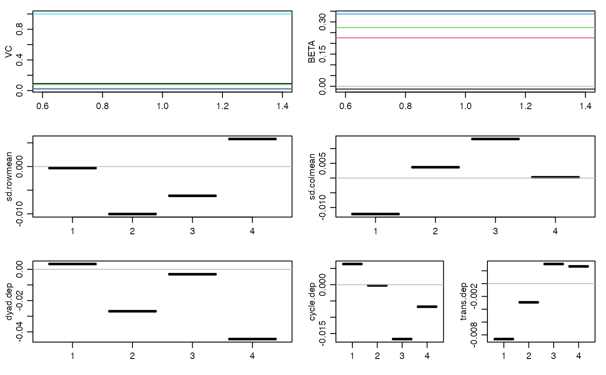
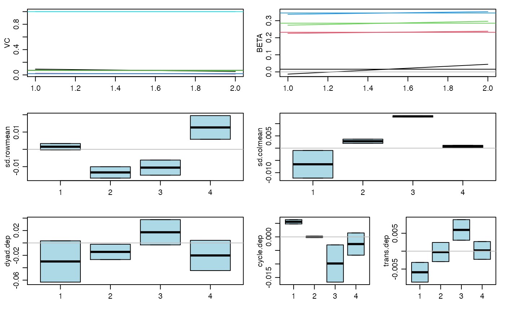
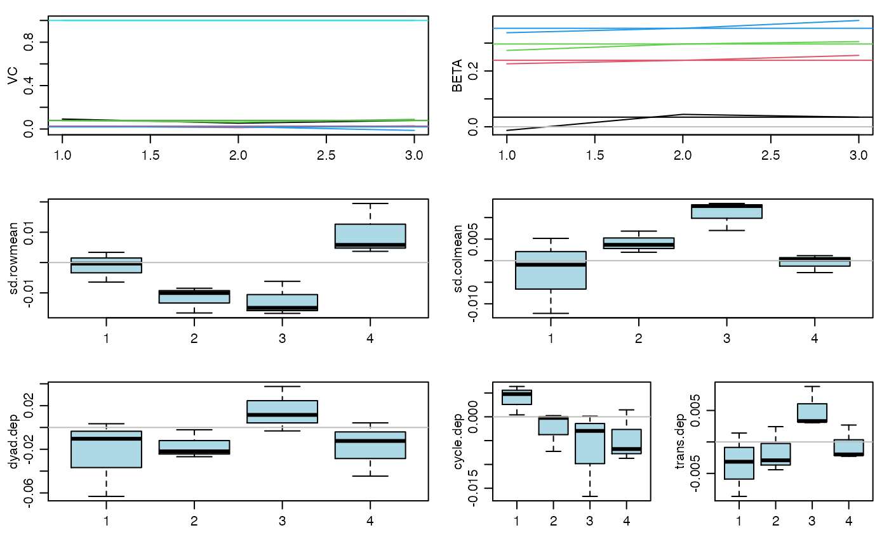

An MCMC routine providing a fit to an additive and multiplicative effects (AME) regression model to replicated relational data of various types.
ame_rep(Y,Xdyad=NULL, Xrow=NULL, Xcol=NULL, family, R=0, rvar = !(family=="rrl"), cvar = TRUE, dcor = !symmetric, nvar=TRUE, intercept=!is.element(family,c("rrl","ord")), symmetric=FALSE, odmax=rep(max(apply(Y>0,c(1,3),sum,na.rm=TRUE)),nrow(Y[,,1])), seed = 1, nscan = 10000, burn = 500, odens = 25, plot=TRUE, print = TRUE, gof=TRUE)
Arguments
| Y | an n x n x T array of relational matrix, where the third dimension correponds to replicates (over time, for example). See family below for various data types. |
|---|---|
| Xdyad | an n x n x pd x T array of covariates |
| Xrow | an n x pr x T array of nodal row covariates |
| Xcol | an n x pc x T array of nodal column covariates |
| family | character: one of "nrm","bin","ord","cbin","frn","rrl" - see the details below |
| R | integer: dimension of the multiplicative effects (can be zero) |
| rvar | logical: fit row random effects (asymmetric case)? |
| cvar | logical: fit column random effects (asymmetric case)? |
| dcor | logical: fit a dyadic correlation (asymmetric case)? |
| nvar | logical: fit nodal random effects (symmetric case)? |
| intercept | logical: fit model with an intercept? |
| symmetric | logical: Is the sociomatrix symmetric by design? |
| odmax | a scalar integer or vector of length n giving the maximum number of nominations that each node may make - used for "frn" and "cbin" families |
| seed | random seed |
| nscan | number of iterations of the Markov chain (beyond burn-in) |
| burn | burn in for the Markov chain |
| odens | output density for the Markov chain |
| plot | logical: plot results while running? |
logical: print results while running? |
|
| gof | logical: calculate goodness of fit statistics? |
Value
posterior samples of regression coefficients
posterior samples of the variance parameters
posterior mean of additive row effects a
posterior mean of additive column effects b
posterior mean of multiplicative row effects u
posterior mean of multiplicative column effects v (asymmetric case)
posterior mean of UV
posterior mean of ULU (symmetric case)
posterior mean of L (symmetric case)
estimate of expectation of Z matrix
posterior mean of Y (for imputing missing values)
observed (first row) and posterior predictive (remaining rows) values of four goodness-of-fit statistics
Details
This command provides posterior inference for parameters in AME models of independent replicated relational data, assuming one of six possible data types/models:
"nrm": A normal AME model.
"bin": A binary probit AME model.
"ord": An ordinal probit AME model. An intercept is not identifiable in this model.
"cbin": An AME model for censored binary data. The value of 'odmax' specifies the maximum number of links each row may have.
"frn": An AME model for fixed rank nomination networks. A higher value of the rank indicates a stronger relationship. The value of 'odmax' specifies the maximum number of links each row may have.
"rrl": An AME model based on the row ranks. This is appropriate if the relationships across rows are not directly comparable in terms of scale. An intercept, row random effects and row regression effects are not estimable for this model.
Author
Peter Hoff, Yanjun He
Examples
#> 20 pct burnin complete #> 40 pct burnin complete #> 60 pct burnin complete #> 80 pct burnin complete #> 100 pct burnin complete #> 6 -0.01 0.23 0.27 0.34 : 0.09 0.03 0.08 0.02 1#> 7 0.02 0.23 0.29 0.34 : 0.07 0.02 0.07 0.02 1#> 8 0.02 0.24 0.29 0.36 : 0.07 0.02 0.08 0.01 1#> 9 0.04 0.25 0.3 0.37 : 0.08 0.03 0.08 0.01 1 #> 4 4 4 4#> 10 0.05 0.26 0.31 0.38 : 0.08 0.03 0.08 0.01 1 #> 5 5 5 5# you should run the Markov chain much longer than this